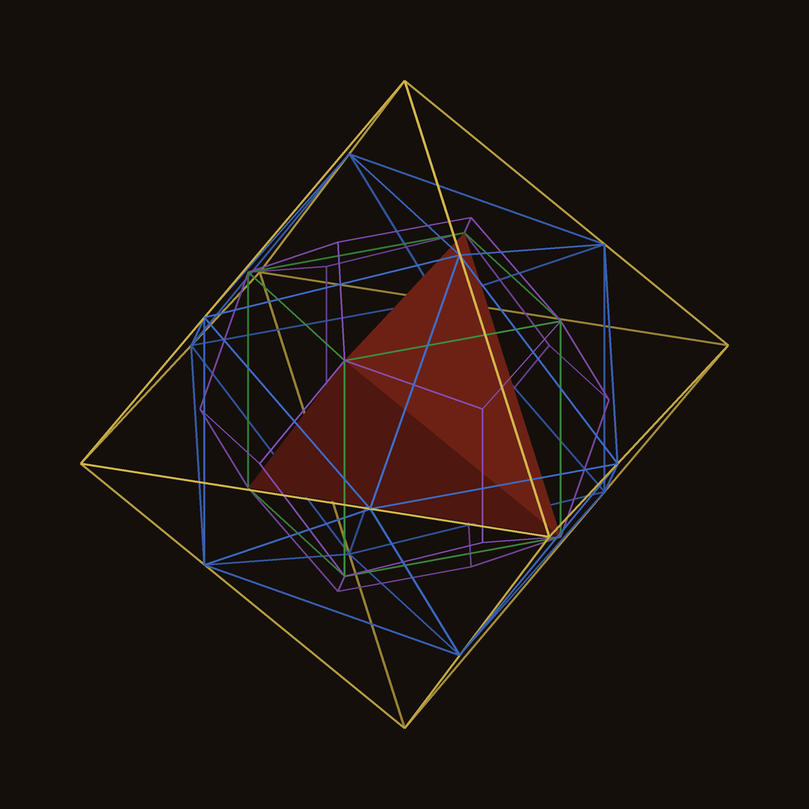
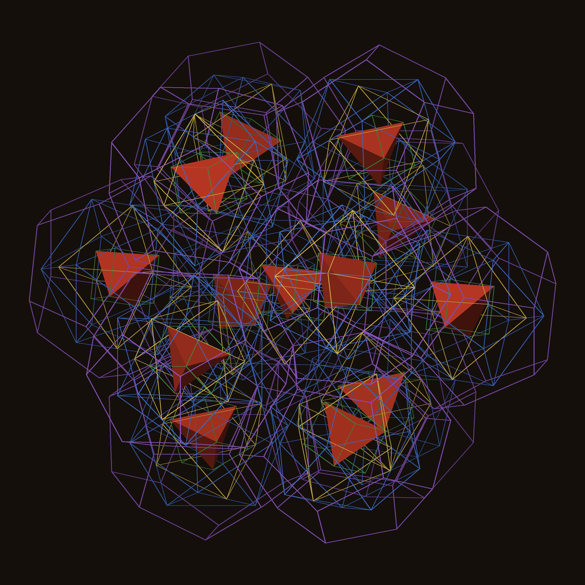
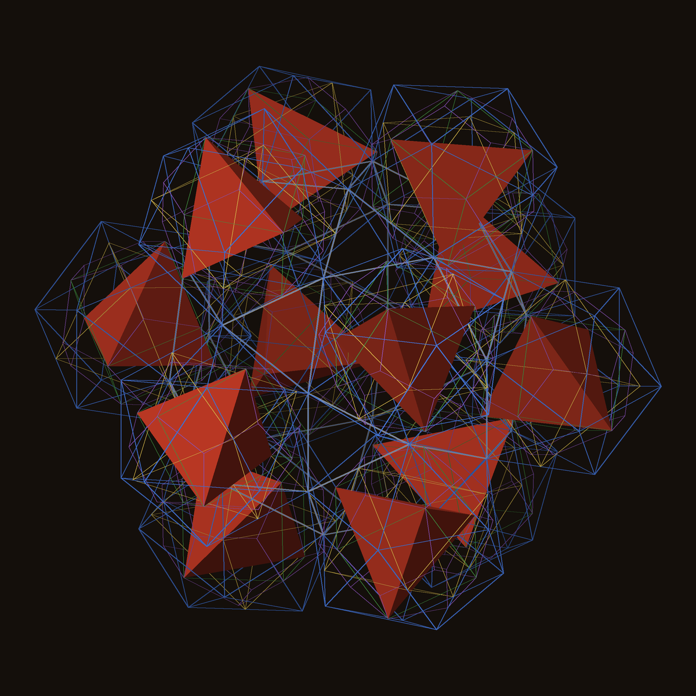
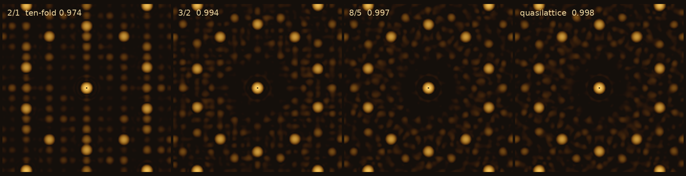

Plato's five solids do not fill space together. But the octet, the honeycomb of tetrahedra and octahedra, can hold all five at once: inside every octahedron sits an icosahedron, inside that a dodecahedron, then a cube, then a tetrahedron, and every tetrahedron of the octet holds the same nest at half the size. From there a ladder of crystals, each a golden ratio larger than the last, climbs towards the five-fold order of quasicrystals.
Proof. [to write from THEOREM.md: Pacioli's icosahedron; D on its face centres; the eight corners (±t, ±t, ±t) with t = 1/(3√2), equal to the octahedron's face centres; T on alternate corners, edge 2/3; midpoint octahedron and truncation in the tetrahedron; periodicity of the octet.]

[table of the twelve inscriptions and the fourteen / eighteen chains (data-nest-catalogue*.txt); gap pieces: Admiral Caps (O − I), twelve pentagonal caps and thirty wedges (I − D, new shapes, names DICTO's), Euclid's roofs (D − C), four octahedron centre pyramids at 2/3 (C − T).]
[nested Dodeca-13 with turns aligned by mirroring; the 600-cell corner (20 nested tetrahedra, gap 14.1%); UNITY with nests and its heart icosahedron (edge 2/√5); the Dodeca-13 fits its own central dodecahedron at ×1/3 (proof pending).]


Figure 2. Left: the nested Dodeca-13 (the 120-cell's 1 + 12). Right: UNITY (the 600-cell's middle slice) with a nest in each of its twelve icosahedra.
| rung | cell | golden rhombohedra per cell | icosahedral seats per cell | ten-fold score |
|---|---|---|---|---|
| 1/1 | body-centred cubic, side 2φ² | 10 + 6 | 1 | 0.9158 |
| 2/1 | cubic, side 2φ³ | 84 + 52 | 1 | 0.9736 |
| 3/2 | cubic, side 2φ⁴ | 356 + 220 | 6 | 0.9937 |
| 5/3 | body-centred cubic, side 2φ⁵ | 754 + 466 | 16 | 0.9969 |
| 8/5 | side 2φ⁶ | 0.9974 | ||
| 13/8 | 0.9976 | |||
| quasilattice | not periodic | ratio φ | 0.9977 |
[seats by bond-order harmonics Q4 = 0, Q6 = 0.6633; each seat's twelve neighbours form a regular icosahedron of edge 2 holding a nest; seats 4.5346 apart; golden rhombohedra (the golden skin) between.]

[proofs or exact checks from the report: points = tiles per cell; seat counts and spacing.]
[from REPORT-fable.md, with every source checked listed.]
[DICTO: the interesting parts arise unbidden, as OG did. Not sought, found on the way: the nest's cube is the octahedron's dual cube; in D > C > I the icosahedron has the dodecahedron's edge; in TT > O > I > D > C > T the innermost tetrahedron has the outer truncated tetrahedron's edge; UNITY's cap tips form an icosahedron of edge 2/√5; the Dodeca-13 fits its own centre at one third; regular octahedra of edge 2(3/8 − λ) in the rock-salt pieces (premise study); the pentagonal caps and wedges of I − D.]
[names for the new gap pieces; the Dodeca-13 by thirds as a proof; seats on higher rungs; whether the nests can be joined across seats; the physics comparison with real 1/1 and 2/1 approximants.]
[Euclid, Elements XIII; L. Pacioli, De divina proportione (1509); J. Kepler, Mysterium cosmographicum (1596) and Harmonices mundi (1619); H. S. M. Coxeter, Regular Polytopes; V. Elser, C. L. Henley 1985; A. I. Goldman, K. F. Kelton 1993; V. Elser, N. J. A. Sloane 1987; DICTO #47, #96, Dodeca-13, The Golden Ladder - full list from the report.]